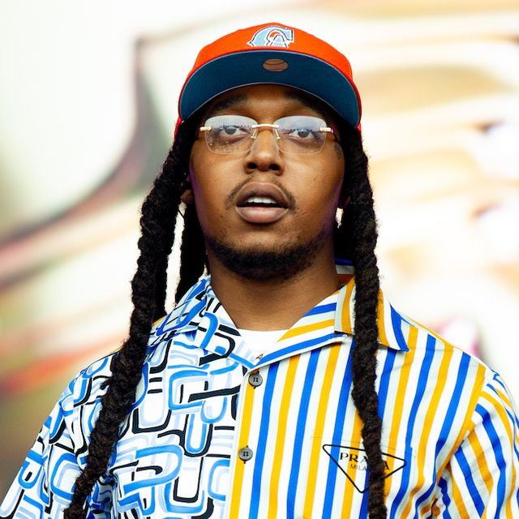

REST EASY TAKE OFF 🕊

Kirshnik Khari Ball (June 18, 1994 – November 1, 2022),
known professionally as Takeoff, was an American rapper. He was best known as a member of the hip hop trio Migos along with his uncle Quavo and first cousin once removed Offset.
The group scored multiple top ten hits on the Billboard Hot 100 including "MotorSport" featuring Nicki Minaj and Cardi B,
"Stir Fry", "Walk It Talk It" featuring Drake, and "Bad and Boujee" featuring Lil Uzi Vert,
the latter of which peaked at the top of the chart (although Takeoff was not present on the single).
He also received two Grammy Award nominations. On November 1, 2022, Takeoff was shot and killed in Houston,
Texas.
DEATH:SHOOTING;
On November 1, 2022, Takeoff was shot three times in the torso and head and was killed on the scene at 810 Billiards & Bowling in Houston, Texas.
He and about 40 people gathered outside the bowling alley after a private party ended there around 1:00 a.m. CDT, according to Houston's KHOU-11 TV.Takeoff's uncle and fellow Migos member Quavo was present during the shooting but was not injured, although he reportedly fainted following the incident and was carried to a vehicle.
Takeoff had posted a video earlier in the night in which he had been driving around Houston with Jas Prince (2nd son of James Prince), who was celebrating his brother's birthday.
Houston Police Sergeant Michael Arrington stated that an altercation broke out as a large group gathered outside the venue's third-floor entrance, and at least two guns were fired.
In a statement, Takeoff's record label said that he was killed by a "stray bullet", and Houston police chief Troy Finner said that he did not believe Takeoff to be the intended target.
The Houston Police Department reported that a fatal shooting had taken place at 2:40 a.m. CDT and that the victim was found dead on arrival while two other victims were "taken in private vehicles to hospitals".
The department later added: "We are not releasing an identity of the deceased victim until his family is notified & ID verified by Harris County Institute of Forensic Sciences." Houston police later confirmed that Takeoff had been killed in the shooting.
A nurse who lived near the bowling alley heard the shots and ran to the scene. She checked the rapper's pulse, but at the time of her arrival, he was already dead.
Two other people, 24-year-old Joshua "Wash" Washington (a business associate of Quavo) and a 23-year-old woman, suffered non-life-threatening injuries during the shooting.
REACTIONS:
Shortly after his death was announced, celebrities including Dave, Chris Eubank Jr., Ric Flair, Snoop Dogg, Mike Tyson, Desiigner, Rae Sremmurd, Almighty Jay, 21 Savage, Gucci Mane, Wiz Khalifa, Kid Cudi, Ja Rule, Keri Hilson, The Game, Big Sean, Teyana Taylor, Rich the Kid, Cole Bennett, Beyoncé and Lil Baby all gave condolences on social media.
Rapper Desiigner announced in a live broadcast on Instagram that he is leaving rap and can no longer be creative due to the death of Takeoff. Blogger DJ Akademiks held a three-hour stream in honor of Takeoff, in which he analyzed videos from the moment of the murder of Ball, and also called for fighting the ideology of violence in hip-hop, including stop imitating rappers YNW Melly and Tay-K, who were convicted of murder. Rapper 50 Cent announced a moment of silence in honor of Takeoff during a concert in Finland, during which photos of him appeared on large screens. French soccer player Benjamin Pavard celebrated a goal for Bayern Munich by making a dab gesture, popularized by Migos. The Buffalo Bills football players held their traditional post-practice karaoke broadcast on Instagram, but before the party began, the players honored Takeoff with a minute. The Atlanta football team Atlanta Falcons paid tribute to Ball in their game against the Los Angeles Chargers, with pictures of him on big screens and his song playing in the background. Basketball player LeBron James changed his profile photo on his Instagram account to a black and white Offset photo. A couple of days later, LeBron came to the match against the Cleveland Cavaliers, wearing a suit and chain, exactly repeating the outfit of the rapper in one of the photo shoots.
Takeoff's label, Quality Control Music, released an official statement:
It is with broken hearts and deep sadness that we mourn the loss of our beloved brother Kirsnick Khari Ball, known to the world as Takeoff. Senseless violence and a stray bullet has taken another life from this world and we are devastated. Please respect his family and friends as we all continue to process this monumental loss.
Numerous murals depicting Takeoff began to appear in Atlanta following his death.
THE FUNERAL:
On November 5, Takeoff's friends and family held a farewell ceremony for the rapper, and a memorial was formed at the site of his death.
Ball's funeral is scheduled for November 11 and will be held at the State Farm Arena.Singers Justin Bieber and Alicia Keys are scheduled to perform for the funeral.
Free tickets were offered for Ball's funeral and eventually sold out.
To know more about Take-off's great career and early life.
EARLY LIFE & CAREER
TAKEOFF AND THE MIGOS
What we have done for ourselves alone dies with us; what we have done for others and the world remains and is immortal. Albert Pike.
Rest in the Lord's abode, Kirshnik Khari Ball "TakeOff".🕊